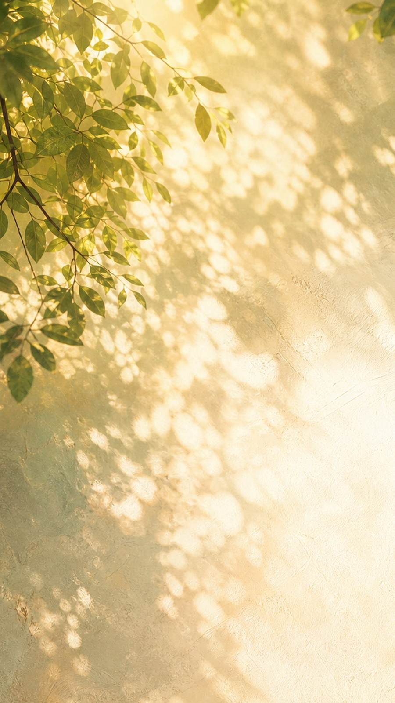
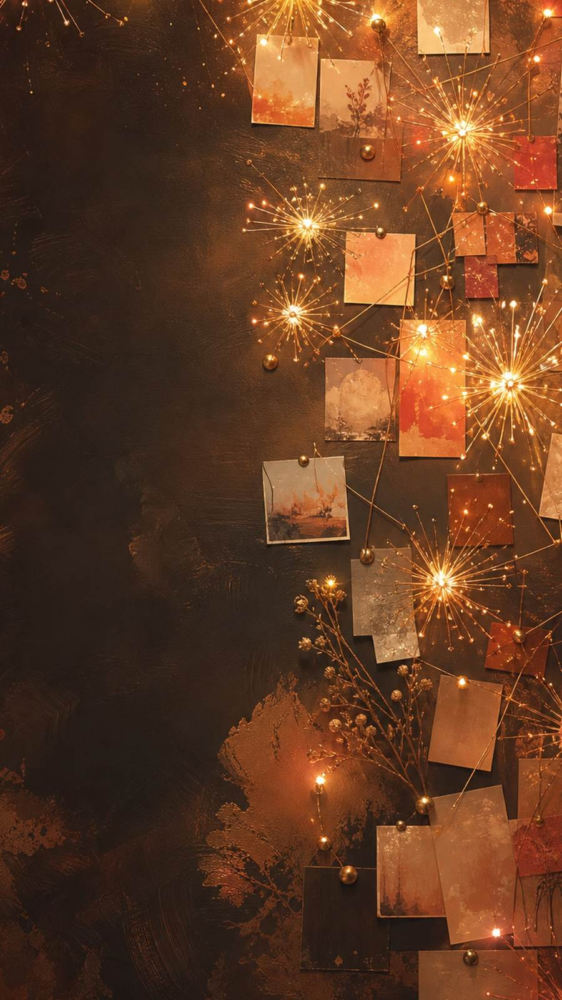
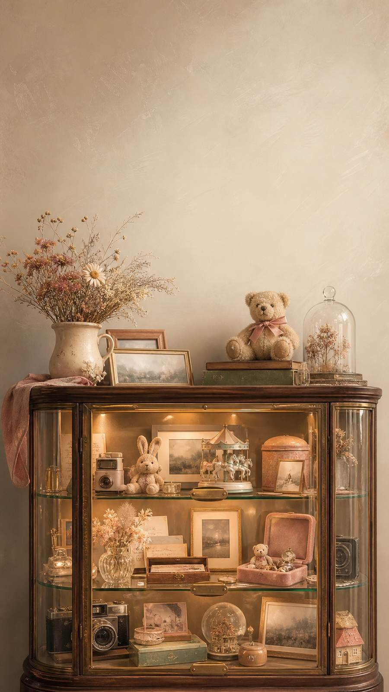
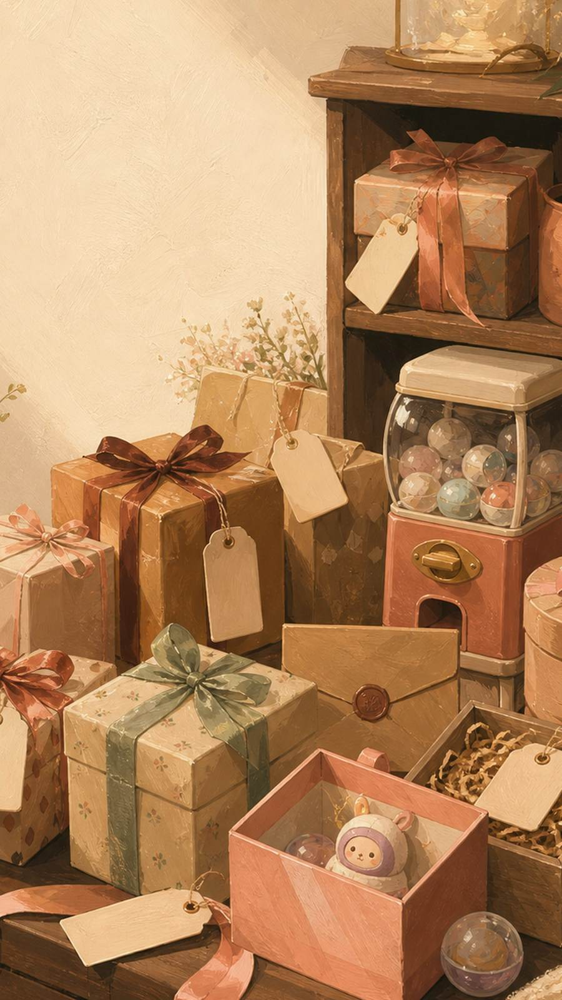

一个有很多有趣事情发生、不会让人无聊的地方；一个有归属感、有生命力的地方；一个路过了，累了，想景怡了，不需要任何理由就想去坐坐的地方。
我的窝要叫什么名字，要大声向世界喊出的那句话是什么？这个问题从年初我开始考虑做一个自己的空间时，我就一直被卡住想不清楚。但！有一天有人问我现在在干嘛，最近咋样呀，我脑子冒出一个词叫 ing——摸鱼ing，思索ing，迷茫ing，绽放ing，享受ing，写自己的窝策划案ing。
欸嘿！我喜欢 [ing] 这个状态：是正在进行，是此时此刻，是持续迈步前行，是蓬勃的生命力，是无限可能性。
它不是过去式——不需要你已经做了什么才可以做什么，不需要你已经成为谁才有资格做什么。现在我想成为什么、我想做什么，我就可以做什么。
它不是将来时——不需要等到什么时候，不需要如果未来有一天。此时此刻，就是最好的时刻。
它也不是完成时——不需要完全想清楚，不需要完美状态。想试试就开始试试，一直试试。
我很认真的问了自己，什么时刻我感受到幸福和爱。然后我回想起每次我站在我的照片墙面前，看见我爱的、爱我的人在我生命中的痕迹，想起我们过往共同经历的事件，会有一股暖流充斥在我的内心。
我一直知道我害怕孤独，所以我希望有很多爱和美好和陪伴塞满我的世界。
所以，或许你想要在 ING 留下你的痕迹和我们的共同回忆，和我一起搭一个窝么~
每个角落都还没有长成最终的模样——它们在等和它频率相同的人，一起把它想清楚、做出来。

我们不是已经成为谁，而是正在成为谁。
这个角落为什么存在？在过去的一年，我一直试图在找自己，我是谁，我从哪里来，我要去哪里。我在找自己的来时路，找为什么成为了现在的自己。
但当有一天我脑海里面，一个积极乐观强大的我和一个懦弱无力退缩的我在疯狂争论吵架时，我在大脑里看着这两个我自己意识到：塑造我的不是过往的我，而是此时此刻的我，选择成为谁。我们不是已经成为谁，而是正在成为谁——这是我很喜欢 ING 这个词的原因之一。
我想让每个来到这里的人，都可以在进入这扇门之后，留下一个此时此刻想要选择成为的自己：I am ______ING
这里会是所有来到 i.n.g 的人的第一站。门背后会有一个毛毡板——一面会不断变化、不断生长的【I.N.G 正在成为】之墙。以后来到这面墙的人，都可以用一些互动的方式，把自己当下的状态、未来选择成为的自己放在这面墙上。
我们可以一起创造什么？期待由你开启这个正在成为自己、记录当下的自己、更喜欢现在的自己的瞬间。
长长舒一口气说：生活真美好。
这个角落为什么存在？我是一个时常在思考活着的意义是什么的人，我会为自己画一个大大圆圆美好的未来的饼，然后屁颠屁颠的紧盯着自己以为的美好目标冲冲冲。但我有时候走到那个饼面前发现原来只是一个泡泡没意思，有时候会在一片迷雾里看不到未来的希望，有时候会觉得好多事情无意义，觉得迷茫又无趣。
当我直面这荒谬无意义的世界，不再欺骗自己，不再活在未来的泡泡里，我意识到与其期待未来的不知多久到来的幻影，不如珍惜当下正在发生的美好。于是我开始学习前行的路上收集生活里的小确幸——那些确幸的时刻是聊天时的开怀大笑，是看见春天路边花开时的喜悦，是吃到家里酸辣可口美食的满足，是被人紧紧拥抱和呵护宠爱着的幸福，是无所事事脑袋空空在沙滩上看着日落绚烂，然后感叹一句"生活可真美好"的无数个点点滴滴的小瞬间。
所以我想要在家里最显眼的角落把最绚烂的日落搬回家，让每个看到 I.N.G 日落的人，长长舒一口气说，生活真美好。
这里会是进家之后看到的最显眼的位置。在客厅的正中央，会用星星灯和丝巾打造一个专属 I.N.G 的落日。在这个美好的落日下，更多的美好温馨时刻创造 ING。
我们可以一起创造什么？未来走进 I.N.G 的人，会因你打造的这片独属 ing 的落日，突然觉得生活真美好。

你不需要成为谁才值得被看见，此时此刻的你正在发光。
这个角落为什么存在？我为自己写下的墓志铭是【她曾精彩的绽放过】。我希望我的人生如烟花般灿烂，即使短暂也要在升空的瞬间肆意绽放。我从不恐惧死亡，但我恐惧暗淡无光。
所以即使我知道世界荒诞，知道或许一切都是一场空，知道燃和焚本就共生，我也仍然想要选择满怀激情的人生——在活着的一秒，肆意绽放属于我的光芒，给予这个世界我的热烈。
在过去的一年，我遇见了好多可爱又宝藏的人儿，她们在我的天空都留下了一束束绚丽耀眼的光芒。我看到她们有很多奇思妙想，有自己的内心坚持和理想，正在试着走自己的路，在做自己热爱的事情的时候眼睛里在发光。然而不是所有人都看到了自己的光——或许会怀疑自己，会觉得自己没什么特别，觉得自己还不够厉害、还没准备好。可是我想告诉来到 I.N.G 的每一个人：你不需要成为谁才值得被看见，此时此刻的你正在发光。
烟花会因自己绽放的光芒而开心，看到烟花的人也会因为这绚烂的色彩而兴奋。所以我想在 I.N.G 留下一片天空，给这些闪闪发光的可爱人们。未来站在这面墙前的人看见，原来有这么多人正在发出自己的光——然后有一天，她会觉得，我也可以。
这里会是 I.N.G 最最最核心的部分——群星闪耀的地方，一群志同道合的人聚拢在一起创造更多有趣事情的地方，未来 I.N.G 活动主理人的聚集地。通过这面烟花墙，我们可以一起挖宝藏，让每一位想要发光的人儿肆意绽放自己独一无二的光芒。
我们可以一起创造什么？每个人，都是一束不一样的烟花。我想邀请你一起，点亮这面墙上的第一束光。
人生不就是体验，活着不就是得折腾。
这个角落为什么存在？我是个脑子时刻在转、有好多乱七八糟想法冒出来的人。有些念头很小："我想晒一天太阳"；有些念头别人听了觉得奇怪："我想去流浪"；有些念头很不切实际："我想建一个游乐园"。聊到每一个想法时我都会很激动、眼睛闪闪发光——但好多想法还没来得及发生，就会有另外一个声音出现：你真的做得到吗？然后这些奇思妙想就会被放下。
创办一个有趣的空间，大概是我六七年前就一直盘旋在脑子里的事情。但之前我一直给自己说：时机不对，没准备好，好难，不知道从哪里开始。但这次我给自己说：没关系，来让我试试看，人生不就是体验，活着不就是得折腾。
所以我想给奇思妙想们准备一个家——把大家在脑海里盘旋想试试、很好奇、不知道怎么样的想法，不如在 I.N.G 试试看！让这些奇思妙想被看见，被认真对待，被实现。I.N.G 是正在进行时：不是过去完成时，不需要你完成所有准备；也不是将来时，不需要等待未来某一天。如果想试试，不如就现在，give it a try。
楼梯两边的墙面会变成奇思妙想正在发生的路径，每个想法会经历三个阶段：奇思妙想墙——记录下想试试的念头，当它被认真对待，就有实现可能性；正在发生墙——敲锣打鼓宣传哪些事情已经开始，快来加入呀；奇迹墙——大声骄傲地向所有人宣布：你看！I WANT IT, SO I GOT IT。
我们可以一起创造什么？奇迹不是一下子发生的，是一阶一阶走上去的。我想邀请你为这条路搭起第一块砖。

认真收藏那些证明我们真的来过的东西。
这个角落为什么存在？我是一个很喜欢收藏自己的美好记忆、并把它们放在生活中最显眼位置的人。可能是一张出发的票根，一张笑出牙龈的拍立得，一个和朋友一起还未完成的半成品。它们本身不一定贵重，但我一看到，就会突然想起那一天、那个人，想起当时我们笑得有多大声。
我一直觉得，记忆如果只躺在手机相册和聊天记录里，好像很容易被新的消息、新的照片一点点盖过去。但有些时刻我舍不得它消失。特别是这个窝开始之后，这里一定会发生很多很多第一次：第一次有人来搭窝，第一次有人在这里分享自己的故事，第一次有人在这里哭，第一次有人大笑到停不下来，第一次有人说"我也想试试"。
所以我想给这些美好记忆准备一个可以住下来的地方。它不需要很宏大，也不需要很正式——它就像一个小小的博物馆，认真收藏那些证明我们真的来过、真的一起经历过、真的在这里留下过痕迹的东西。
每一次活动之后、每一次共创之后、每一个重要的小瞬间，都可以留下一件小小的展品——票根、合照、手写卡片、扭蛋壳、书签、干花。每一件东西旁边都会有一张小标签：它是什么，谁留下的，为什么被放在这里。未来有人站在这个橱窗前，会看到 I.N.G 是有很多人、很多夜晚、很多笑声和很多心动慢慢堆起来的地方。
我们可以一起创造什么？我想邀请你一起放进第一批会被记住的东西，成为这座记忆博物馆的第一批策展人。

让美好在不同人的生命里继续流动。
这个角落为什么存在？我很喜欢给大家准备礼物，也很喜欢收到礼物。一份礼物承载着我的美好记忆，和我无声的挂念。而当这份礼物和挂念被分享出去时，就变成两个人心里都有的东西。
我也很喜欢收到礼物和美好——因为它们不仅是一个物件，那是生活不期而遇的小确幸，是来自身边的人和世界的爱，是被宠着和呵护着的实证。我很想把这份美好和小确幸分享给大家，让来到 I.N.G 的人不只是带走一个活动体验，而是真的带走一点来自另一个人的温柔。让美好的光，亮点燃更多的光。
所以我想做一个分享美好柜。你可以带来一个曾经温暖过你的小东西，写下它的故事，把它留在这里；也可以从这里带走一个来自陌生人或朋友的心意。它不是交换礼物这么简单——它更像是让美好在不同人的生命里继续流动。
也许会有一个扭蛋机，也许会有很多编号的小盒子，里面装着不同人留下的礼物和故事。每个人可以带来 1-2 个美好——一本小书、一张卡片、一包好喝的茶、一句很喜欢的话。来到这里的人扭开一颗蛋，抽到一个编号，打开一个未知的小礼物。她带走的不只是东西，还有上一个人留下的那句话。
我们可以一起创造什么？未来会有人在这里意外收到一份刚刚好的心意，然后觉得今天好像突然变亮了一点。我想邀请你一起，把第一份美好放进这个柜子。
这六个角落，都还没有长成最终的模样。
如果哪一个让你心动了——它可能就在等你。